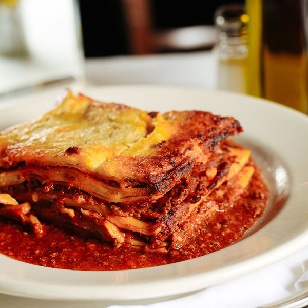

Lasagna Emiliana Ricetta
The most delicious homemade Lasagna Bolognese you can eat. With anugs beef, mozzarella cheese, Parmesan, bechamel, and tomato sauce.
Ingredienti
- 8 Lasagna sheets
- 1 lb angus beef ground
- 1 onion finely chopped
- 2 cloves garlic minced
- 1 celery slatk finely chopped
- 1 can of diced tomatoes
- 1 cup of beef broth
- 2 tbsp tomato paste
- 2 tbsp olive oil
- salt and pepper to taste
- 2 cups of bechamel sauce (see below)
- 2 cups of grated mozzarella cheese
- 1 cup of grated parmesan cheese
- fresh basil leaves chopped (optional)
Bechamel sauce
- 2 tbsp butter
- 2 tbsp all-purpose flour
- 1 cup of milk
- salt ant peper to taste
- ½ cup of grated parmesan cheese
Cominciamo!
- Preheat the oven to 375°F (190°C).
- Cook the lasagna sheets in boiling water, stirring occasionally, for 8 to 10 minutes. Drain and set aside.
- In a large pot, heat olive oil and sauté the onion, garlic, carrot, and celery until softened.
- Add the ground beef and cook until brown
- Add the diced tomatoes, beef broth, tomato paste, salt and pepper to taste.
- Simmer for 30 minutes, stirring occasionally.
- Make the bechamel sauce by melting butter and whisking in flour. Gradually add milk, and cook util thickened. season with salt, pepper and parmesan cheese.
- In a large baking dish, spread a thin layer of tomato sauce. Arrange 4 sheets on top.
- Spoon half of the beef and tomato sauce ovet the lasagna sheets, followed by half of the bechamel sauce.
- Sprinkle with half of the mozzarella and parmesan cheese. Repeat the layers, starting with the lasagna sheets, tomato sauce, beef and tomato sauce, bechamel sauce, and cheese.
- Cover with aluminum foil and bake for 30 minutes. Remove foil and bake for an additional 15-20 minutes, or until the cheese is golden brown.
- let it rest for a few minutes before slicing and serving.